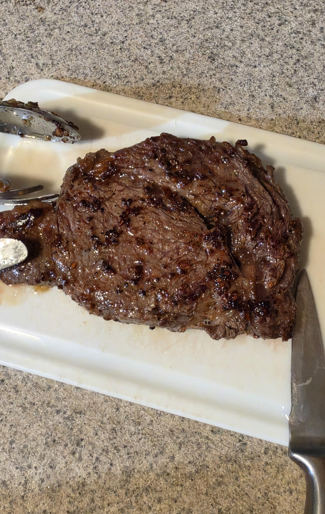
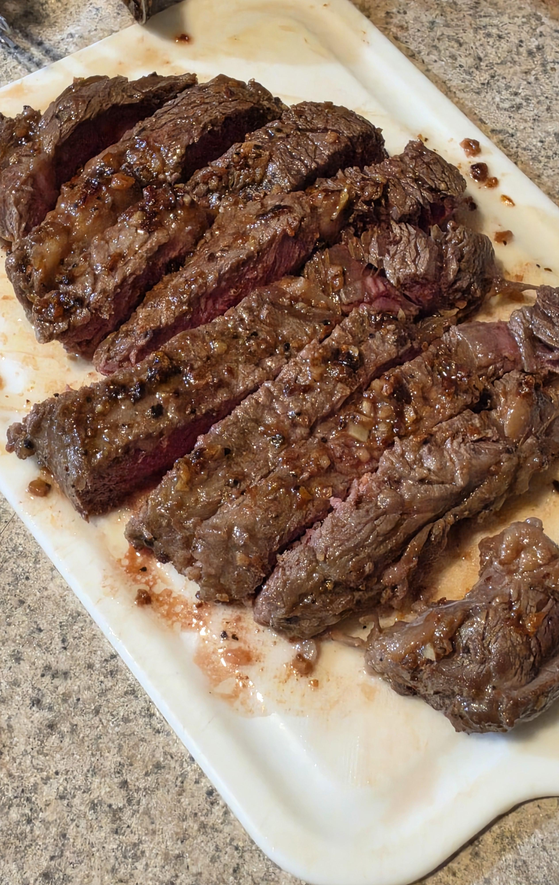

그냥 고든 렘지 시키는대로 펜 달구고 올리브 오일 붓고 소금이랑 후추 묻힌 고기 팬에 텅 올려서 30초-45초 마다 뒤집으면서 3번째 뒤집을때쯤에 마늘 올리고 올리브 오일 한번더 부어주고 4번째 뒤집을때 버터 하나 잘라서 올려주고 6번때쯤에 끝내고 도마 위에 올리고 5분정도 레스팅 함.
오랜만에 구운거라 걱정했는데 겉보기엔 멀쩡해보이네 ㅎ
개인적으로 에이원 소스 살짝 찍어서 먹긴하는데. 스테이크 소스는 뭐 쓰는게 나은지도 좀 알려주면 다음번에 참고할게
난 후추만 친게 맛있더라